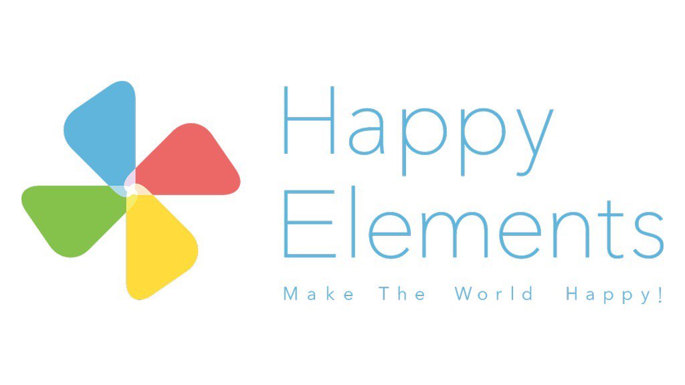

みなさんこんにちは！
大好評のうちに終わったRails Girls が再び京都にやってきます！二日間のワークショップの間に、Ruby on Railsのすてきな世界を体験してみませんか？ワークショップ参加は無料です。
11月07日(金)までにこちらから応募してください。
Hello world!
Rails Girls comes to Kyoto! During the free two-day workshop we'll dive into the magical world of Ruby on Rails.
Apply now! Applications are open until the 07th of November.
概要 コーチに教えてもらいながらプログラムを設計して、プロトタイプを作り、コーディングします。
必要なもの 自分のノートパソコン、やる気とキラリと光るイマジネーションを持ってきてください！
コーチ募集中！ Rails Girls Kyoto では現在コーチを募集しています。こちらからお問い合わせ下さい。
| 20:00 - 22:00 |
インストール・デーまずは、参加者同士、お互いに知り合いになりましょう。ご自分のノートパソコンをお持ちください。それぞれのパソコンにRubyとRailsをインストールします。二日間とも参加することが望ましいですが、どうしても参加できない！という人は、この日は欠席でも大丈夫です。 |
|---|
タイムテーブルは予定のものです。詳細は随時更新します！
| 9:00 - 10:00 |
レジストレーション、ティー金曜日に参加できなかったり、Ruby on Railsのインストールトラブルが残っていれば、この時間に解決しましょう。終わった人は金曜日に話すことが出来なかった参加者と知り合いになりましょう。 |
|---|---|
| 10:00 - 10:20 |
開会一日の流れの説明。スポンサーから一言。 |
| 10:30 - 12:30 |
ワークショップ |
| 12:30 - 13:30 | ランチ |
| 13:30- 17:00 |
ワークショップとライトニングトークス |
| 17:00 - |
アフター・パーティ参加者、コーチ、スタッフによるパーティです。ワークショップで聞き損ねたことやRubyやRailsのこと、ステップアップの方法など、コーチに気軽に質問してみましょう。 |
参加申し込みは締め切らせていただきました。
多数のお申し込み、ありがとうございました！
締め切り: １１月０７日
参加了承の連絡:１１月１４日
*お申し込みをされた方はご確認をお願い致します
会場:
株式会社はてな 地図
京都府京都市中京区御池通間之町東入高宮町206 御池ビル 8F
Rails Girls Kyoto は以下のすばらしいパートナーとの共同開催です。
株式会社はてなは創業以来、人と人とのコミュニケーションを促進し、価値ある情報をより多くの人に届けることをミッションとしている会社です。「人力検索はてな」やソーシャルブックマークサービス「はてなブックマーク」など、ときには楽しくときには便利に、また長く使い続けることのできる、まるで生活のパートナーとして存在できるようなサービスを提供しています。
 日本Rubyの会は、Rubyの利用者の支援とRuby(とRubyのライブラリ)開発者の支援を目的とした一般社団法人です。
現在は、ドキュメントの整備や、イベントへの参加協力等を中心に活動しています。
日本Rubyの会は、Rubyの利用者の支援とRuby(とRubyのライブラリ)開発者の支援を目的とした一般社団法人です。
現在は、ドキュメントの整備や、イベントへの参加協力等を中心に活動しています。
 Kumu Inc. 思い入れのある製品を生み出す時、時間をかけて成熟した完全な状態で世の中に出そうとしていませんか？小さく生み出して、早く使用してみて、利用者のフィードバックをもとに着実に育てていく、それがこれからのビジネスの一つの形ではないでしょうか？そんな皆様とチームを組み「生み出す×育てる」パートナーとなりたい。それが、私たちKumuの思いです。
Kumu Inc. 思い入れのある製品を生み出す時、時間をかけて成熟した完全な状態で世の中に出そうとしていませんか？小さく生み出して、早く使用してみて、利用者のフィードバックをもとに着実に育てていく、それがこれからのビジネスの一つの形ではないでしょうか？そんな皆様とチームを組み「生み出す×育てる」パートナーとなりたい。それが、私たちKumuの思いです。
株式会社インターネットイニシアティブ 私たちIIJは、 MOGOKという少し変わった名前のRubyのPaaSを、国内のレスポンスのいい環境と安心の日本語サポートで提供しています。 MOGOKは「コンピュータに使われる人」ではなく「コンピュータを使う人」でありたいと願うすべてのRubyプログラマを支援します。
 株式会社spice lifeはECを通して世の中に笑顔を増やすサービスを作ります。spice lifeで開発するのはECの分野、ちょっと変わった、ちょっと新しい、ちょっと世の中を良くするようなECです。もちろんRailsで開発しています。オリジナルTシャツ作成サービスtmixは各地のRailsGirlsのスタッフTシャツ作成もしています。
株式会社spice lifeはECを通して世の中に笑顔を増やすサービスを作ります。spice lifeで開発するのはECの分野、ちょっと変わった、ちょっと新しい、ちょっと世の中を良くするようなECです。もちろんRailsで開発しています。オリジナルTシャツ作成サービスtmixは各地のRailsGirlsのスタッフTシャツ作成もしています。
 クランディムは創意・熱意・誠意を持って、顧客・社会・未来に貢献し、「ありがとうを創造する」を理念として業務系アプリケーション、コンシューマー系アプリケーションの開発を行っている会社です。2012年からはRuby と Railsを取り入れてさらなる「ありがとう」創造したいと考えています。
クランディムは創意・熱意・誠意を持って、顧客・社会・未来に貢献し、「ありがとうを創造する」を理念として業務系アプリケーション、コンシューマー系アプリケーションの開発を行っている会社です。2012年からはRuby と Railsを取り入れてさらなる「ありがとう」創造したいと考えています。
 Facebook(中国語)内でトップクラスのソーシャルゲームを手掛けるHappyElements。2010年に日本法人を設立。独立した開発スタジオとして、Ruby on Rails の高い生産性を活かし、モバイル向けのゲームを開発しています。将来的には中国本社とのシナジーを活かし日本から世界へ、日本発のソーシャルゲームを世界で展開したいと考えています。
ヤフー株式会社
日本最大級のインターネットの総合情報サイト「Yahoo! JAPAN」を運営するヤフー株式会社は、ITを使って人々や社会のさまざまな「課題」を解決して いく「課題解決エンジン」として、いろいろな取り組みを進めています。
 株式会社アルメディア・ネットワーク では技術者集団として開発・インフラネットワーク・医療情報の3分野にて顧客満足を私達の存在価値として日々業務に努めています。2010年よりRubyの取組を強化し、関西地方で”Rubyビジネス推進協議会”設立・運営に寄与貢献しています。そして今後はRubyコミュニティと一緒に成長して行きたい考えています。
株式会社アルメディア・ネットワーク では技術者集団として開発・インフラネットワーク・医療情報の3分野にて顧客満足を私達の存在価値として日々業務に努めています。2010年よりRubyの取組を強化し、関西地方で”Rubyビジネス推進協議会”設立・運営に寄与貢献しています。そして今後はRubyコミュニティと一緒に成長して行きたい考えています。
参加費はどのくらいかかりますか？ 無料です。申し込むときにはわくわくした気持ちだけあればいいです。
どのような人が参加するのでしょうか？ コンピュータを使ったことがある女性ならだれでも参加できます。 これまでに開催されたRails Girlsイベントには様々な年齢の女性がやってきました。 ご自分のノートパソコンをお持ちください。
男性も参加できますか？ 参加できます。ただし、必ずウェブアプリを作りたがっている女性と一緒に参加してください。申し込み人数が多い場合はお断りすることがあります。
プログラミングの経験があります。手伝うことはできますか？ Rails Girls Kyoto ではコーチを担当してくれる人を捜しています。 RailsGirls でコーチを担当したいという方はこちらからお申し込み下さい。
 Saori Yuri
Saori Yuri Yuka Atsumi
Yuka Atsumi Aki
Aki Hiroshi Shibata
Hiroshi Shibata Satomi Tsujita
Satomi Tsujita Atsushi Yoshida
Atsushi Yoshida Tomohiro Nishimura
Tomohiro Nishimura Shuhei KONDO
Shuhei KONDO Ippei KATO
Ippei KATO Masato NODA
Masato NODA Keiko YADA
Keiko YADA  Tatsuya OGI
Tatsuya OGI KAJIHARA
KAJIHARA Takehiro ADACHI
Takehiro ADACHI tiken
tiken Takami AOYAMA
Takami AOYAMA